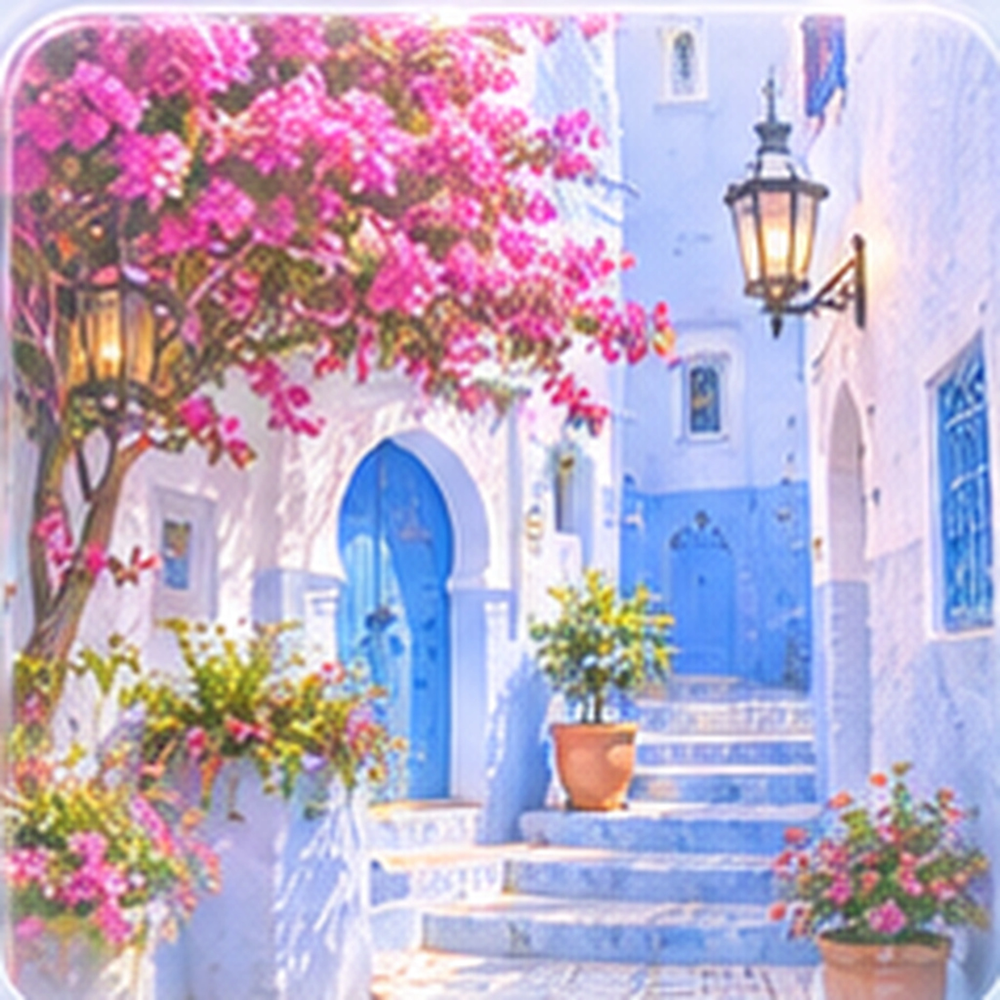

Best season
ベストシーズン
情報を準備しています。

DESTINATION INSPIRATIONAfrica
モロッコ
まだ知らないモロッコの景色を、次の旅の宝物に。
TORAMI’S HONEST NOTES
ON THE WISH LIST
まだ見ぬ旅先。訪れたら、写真と本音の記録をここに。
BEFORE YOU GO
Best season
Currency
Language
Getting there
What to wear
Travel notes
現地予算の記録は準備中です。下の計算欄で、自分の旅の予算を組み立てられます。
MY PHOTO ALBUM
実際に旅先で撮影した写真をまとめています。
登録された情報から、ここに表示していきます。
PERSONAL POSTCARDS
この国で撮った写真を、日付やひと言と一緒に残していきます。
MAKE IT A JOURNEY
出発前の小さなチェックリスト
チェックはこのブラウザに保存されます。A SIMILAR KIND OF MAGIC
旅のテーマが似ている場所から選んだ、次の旅先アイデア。